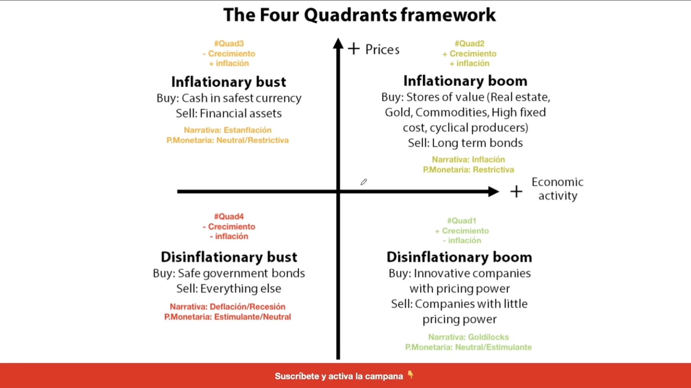
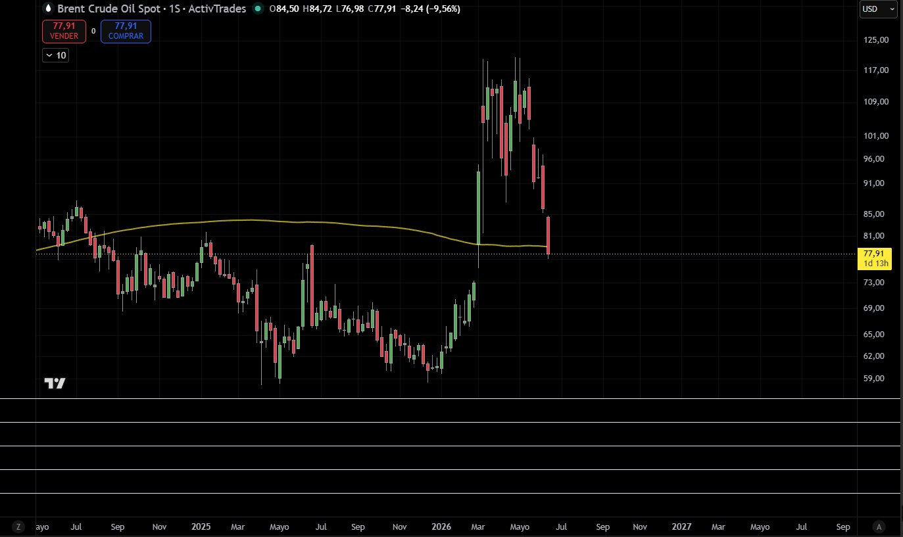
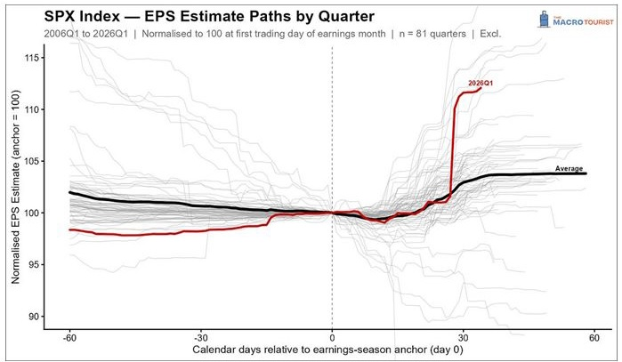
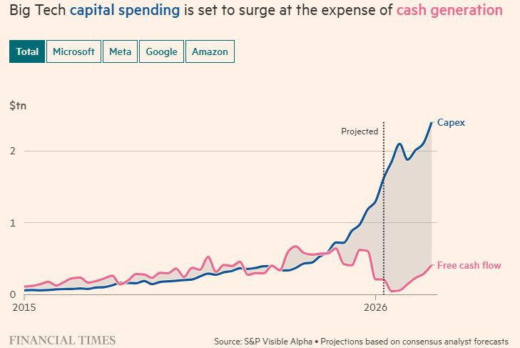
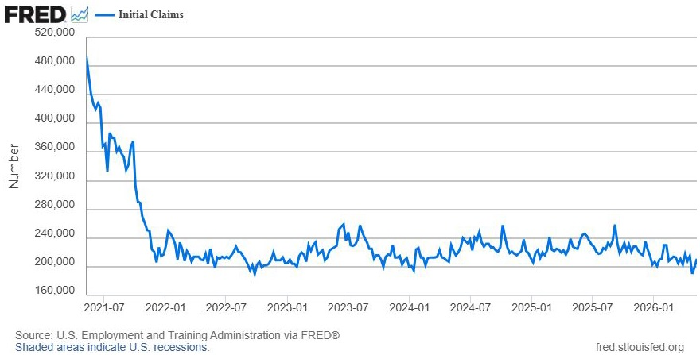
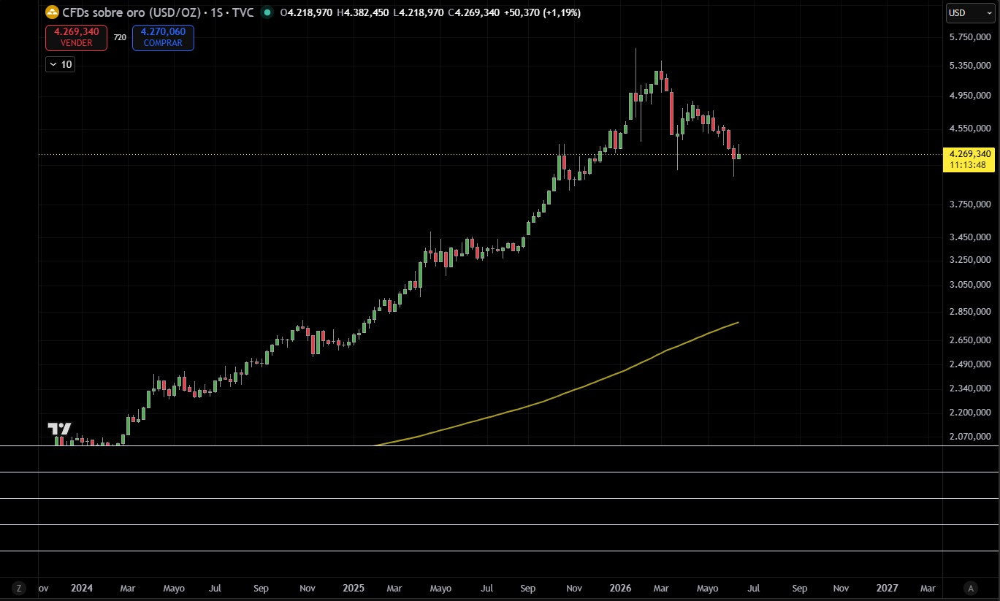

Az USA Quad2-ben van (Inflationary Boom). A Brent 35%-os csökkenésével a csúcsokról a Goldilocks-átmenet feltételei kialakulóban vannak. A kulcsdátum: 2026. július 14.
Ez az elemzés az Egyesült Államok gazdaságának jelenlegi helyzetét értékeli a Négy Makrogazdasági Kvadráns keretrendszerén belül, azzal a céllal, hogy azonosítsa az uralkodó piaci rezsimet és előrejelezze annak valószínű alakulását a következő 2–3 hónapban.
Az USA jelenleg Quad2-ben (Inflationary Boom) van: pozitív gazdasági növekedés emelkedő inflációval. Az inflációs felívelés elsődleges oka azonban egy külső energetikai ellátási sokk volt, amelyet a 2026. február 28-án kezdődő USA/Izrael vs. Irán konfliktus váltott ki. Mivel a Brent ára ~$120-os csúcsokról $78-ra esett (−35%), a Quad1-re (Disinflationary Boom / „Goldilocks") való átmenet feltételei kialakulóban vannak. A megerősítés kulcsdátuma 2026. július 14., amikor a júniusi CPI megjelenik.
A Négy Kvadráns modell a makrogazdasági környezetet két tengely mentén osztályozza: a gazdasági aktivitás iránya (növekedés vagy zsugorodás) és az árak iránya (infláció vagy dezinfláció). Minden kvadráns különálló piaci rezsimet definiál, meghatározott következményekkel a monetáris politikára és az eszközallokációra nézve.

| Kvadráns | Rezsim | Aktivitás | Árak | Monetáris politika |
|---|---|---|---|---|
| Quad1 | Disinflationary Boom (Goldilocks) | + | − | Semleges / Ösztönző |
| Quad2 | Inflationary Boom | + | + | Megszorító |
| Quad3 | Inflationary Bust (Stagfláció) | − | + | Semleges / Megszorító |
| Quad4 | Disinflationary Bust (Recesszió) | − | − | Ösztönző / Semleges |
| Hónap | Teljes CPI (é/é) | Mag-CPI (é/é) | Spread |
|---|---|---|---|
| 2025. jún. | 3,0% | 3,2% | −0,2pp |
| 2025. szept. | 3,0% | 3,0% | 0,0pp |
| 2025. dec. | 2,7% | 2,8% | −0,1pp |
| 2026. jan. | 2,4% | 2,5% | −0,1pp (mélypontja) |
| 2026. febr. | 2,8% | 2,5% | +0,3pp |
| 2026. márc. | 3,3% | 2,6% | +0,7pp |
| 2026. ápr. | 3,8% | 2,8% | +1,0pp |
| 2026. máj. | 4,2% | 2,9% | +1,3pp |
Forrás: BLS / FRED. 2025 okt.–nov. becsült (lásd módszertani megjegyzést).
A teljes CPI (4,2%) és a mag-CPI (2,9%) közötti növekvő különbség egy külső energetikai ellátási sokk egyértelmű jele, nem strukturális kereslet-vezérelt inflációé. Általánosított inflációnál a teljes és mag-CPI felfelé konvergál. Itt divergálnak — ez megerősíti a sokk külső eredetét.

A $78-as Brent-árral és a mozgóátlag alatt, a CPI energiakomponense — amely márciustól májusig a havi növekedés több mint 60%-át magyarázta — erősen vissza fog fordulni a következő 1–2 adatközlésen. A júniusi CPI (2026. július 14-i közzététel) lesz az első mérés, amely ezt a megfordulást rögzíti.
| Negyedév | Reálnövekedés (SAAR) | Megjegyzések |
|---|---|---|
| 2025 Q1 | −0,6% | Zsugorodás. Vámhatás / bizonytalanság. |
| 2025 Q2 | +3,8% | Erős visszapattanás. Csökkenő import + fogyasztás. |
| 2025 Q3 | +4,4% | A közelmúlt ciklikus csúcsa. |
| 2025 Q4 | +0,5% | Éles lassulás. Geopolitikai feszültségek kezdete. |
| 2026 Q1 | +1,6% | BEA 2. becslés. Tartalmazza a konfliktus kezdetét. |
| Negyedév | Negyedéves változás | Trend |
|---|---|---|
| 2025 Q2 | +$6,8 Mrd | Felépülés kezdete. |
| 2025 Q3 | +$166,1 Mrd | Erős gyorsulás. |
| 2025 Q4 | +$246,9 Mrd | Csúcs. Évek óta a legnagyobb növekedés. |
| 2026 Q1 | +$40,4 Mrd | Éles lassulás. Konfliktus folyamatban. |
| Hónap | ISM Feldolg. | ISM Szolgált. | Értékelés |
|---|---|---|---|
| 2025. jún.–szept. | 47–49 | 51–55 | Ipar zsugorodik. Szolgáltatások bővülnek. |
| 2025. okt.–dec. | 47,5–48,2 | 52,6–54,4 | Ipar: 10. egymást követő hónap zsugorodás. |
| 2026. jan. | 50,9 | 52,8 | Ipar először tér vissza bővülésbe. |
| 2026. febr. | 52,4 | 56,1 | Mindkét szektorban konszolidálódó bővülés. |
| 2026. márc. | 52,7 | 54,0 | Első adat iráni háborús hatással. |
| 2026. ápr. | 52,7 | 53,6 | Árak robbannak (84,6). PMI stabil. |
| 2026. máj. | 54,0 | 54,5 | Ipari csúcs 2022. május óta. Szolgáltatások: 23. bővülési hónap. |
Az ISM feldolgozóipari PMI 54,0-ra emelkedett 2026 májusában — legmagasabb 2022 május óta —, annak ellenére, hogy a megkérdezettek 42%-a az iráni háborút nevezte meg negatív tényezőként. Az ipari bővülés még háborús környezetben is konszolidálódik.

A grafikon üzenete egyértelmű: a 0. nap előtti 30 napban a 2026 Q1 EPS-becslések jelentősen lefelé kerültek revidálásra — a konfliktus kezdete által keltett bizonytalanságot tükrözve. Az elemzők nyereségromlást anticipáltak. Azonban amint a tényleges eredmények megjelentek (0. naptól), a becslések történelmi mértékben robbantak felfelé, elérve ~112-t a 100-as alapon — messze meghaladva a 81 elemzett negyedév bármelyikét.
A 2026 Q1 történelmi EPS-meglepetése megerősíti, hogy a vállalati szektor erő, nem törékenység pozíciójából működik. Egy gazdaság, ahol a nyereségek historikusan pozitív meglepetésszinten vannak, a PMI-k bővülnek és a munkaerőpiac szilárd, és amely ráadásul hamarosan dezinflációs enyhülést fog kapni a Brent visszaesésétől, ideális feltételeket nyújt a Goldilocks-forgatókönyvhöz.

A négy nagy összesített Capex-e a 2015-ös $0,5 billió alatti szintről $2 billióra nőtt 2026-ra. Ez az AI-infrastruktúráért folyó verseny tükrözi: adatközpontok, chipek, felhőalapú számítástechnikai hálózatok. Ami igazán figyelemre méltó: az óriási beruházás ellenére az előrejelzések azt mutatják, hogy a szabad cash flow összeszorul ugyan, de pozitív marad — ezek a vállalatok elegendő operatív pénzáramot termelnek saját terjeszkedésük finanszírozásához.
A fenti négy alfejezet (GDP, BEA-nyereségek, PMI-k, EPS és Big Tech Capex) következetes, konvergens képet fest: az USA gazdasági aktivitása robusztus. Az egyetlen változó, amely meghatározza, hogy a két jobb oldali kvadráns (Quad1 vagy Quad2) közül melyikben vagyunk, az infláció.

| Mutató | Érték | Kontextus |
|---|---|---|
| Kérelmek (jún. 6. hete) | 229K | Legmagasabb 2026. február óta. Még egészséges sávban. |
| 4 hetes mozgóátlag (máj.) | 209K | Historikusan alacsony szint. |
| Munkanélküliségi ráta | 4,3% | 3. egymást követő stabil hónap. |
| Nem mezőgazdasági munkahelyek (2026. máj.) | +172K | Az elemzői konszenzus felett. |
| ISM Foglalkoztatás Ipar (máj.) | 48,6 | Még 50 alatt, de javuló. |
A Quad2 → Quad1 átmenet a 2026 júliusi–szeptemberi adatokban materializálódhat. Az elemzés legfontosabb dátuma 2026. július 14., a 2026. júniusi CPI közzétételének napja. Ez lesz az első mérés, amely rögzíti a Brent $120-ról $78-ra való esését.
| Kockázat | Valószínűség | Hatás | Jelzőváltozó |
|---|---|---|---|
| Iráni konfliktus újraéledése | Alacsony-közepes | Nagyon magas | Brent >$95 |
| Mag-CPI gyorsul >3,2%-ra | Közepes | Magas | 2026. júl. CPI |
| Másodkörös hatások a szolgáltatásokban | Közepes | Közepes | Lakhatás + Közlekedés CPI |
| Hosszú távú munkanélküliség romlása | Alacsony | Közepes | Kérelmek >260K |
| Globális keresleti recesszió | Alacsony | Magas | Globális PMI-k + Brent <$65 |
Az elbeszélés koherens és az adatok jól illeszkednek. Pontosan akkor, amikor az elemzés eleganssá válik, szkepticizmust kell aktiválni. A piac már tudja mindezt és előre beárazza. Mielőtt e tézis alapján cselekedne, ellenőrizze, hogy a Quad2→Quad1 átmenet mekkora részét tükrözik már az eszközárak (S&P500, kamatok).
| Mutató | Fed (USA) — 2026. jún. 17. | EKB (Eurozóna) — 2026. jún. 11. |
|---|---|---|
| Teljes infláció | 4,2% (2026. máj.) | 3,2% (2026. máj.) |
| Kamatdöntés | Változatlan (3,5%–3,75%) | Emelés +25bp (2,25%-ra) |
| GDP | +1,6% (2026 Q1, SAAR) | −0,2% (2026 Q1) |
| Kijelölt ok | „Tranzitoros kínálati sokk" | „Nem hagyhatjuk figyelmen kívül ezt a sokkot" |
Az USA körülbelül $39 billió állami adóssággal rendelkezik. Tartós 4–5%-os éves inflációval az adósság reálértéke évente körülbelül ugyanannyival erodálódik. Tíz év alatt, 4,5%-os átlagos inflációval az adósság reálértéke kb. 36%-kal csökken — visszafizetés vagy kiadáscsökkentés nélkül. A technikai neve: pénzügyi represszió.
Az adósság-likvidálási hipotézis nem feltételez összeesküvést a Kincstár és a Fed között. Csak azt feltételezi, hogy az implicit inflációs toleranciaküszöb megemelkedett nagyon magas adósság, szilárd gazdaság és külső energetikai sokk kontextusában. Ez empirikusan ellenőrizhető hipotézis a reálkamatok időbeli alakulásán keresztül.

A grafikon parabolikus emelkedést mutat ~$2.000-ről 2024-ben ~$5.350-es csúcsokra 2026 március–áprilisában — 160%-nál nagyobb felértékelődés két év alatt —, amelyet −20%-os korrekció követett a jelenlegi $4.269-re. Makrogazdasági olvasatban: a parabolikus emelkedés tökéletesen beárazza a Quad2-forgatókönyvet és a geopolitikai sokkot. Az azt követő korrekció azt tükrözi, hogy a piac elkezdi beárazni a Quad1-átmenetet.
Az arany folytatja esését $3.800–$4.000 felé → A piac Quad1-et (Goldilocks) áraz be. Infláció enyhül, reálkamatok javulnak. Fő tézis megerősítve.
Az arany stabilizálódik és áttöri $5.350-et felfelé → A piac meghosszabbított Quad2-t áraz be. Tartós infláció, tartósan negatív reálkamatok, csendes adósságlikvidálás folyamatban. Alternatív forgatókönyv megerősítve.
A Brent 35%-ot korrigált a csúcsokról $78-ra, mozgóátlag és konfliktus előtti szintek alatt. A CPI energiakomponense erősen visszafordul a 2026 júniusi–augusztusi adatokban.
A Quad1 historikusan a részvények számára legkedvezőbb rezsim: a marzsok javulnak a csökkenő energiaköltségek mellett, a Fed visszanyeri a kamatvágási mozgásteret, a reálfogyasztás helyreáll a dezinflációval, és a részvénymultiplikátorok bővülnek.
A Fed implicit módon megemelte az inflációs toleranciaküszöbét. Negatív reálkamatokkal (3,625% nominális vs. 4,2% infláció) de facto pénzügyi represszióst alkalmaz, amely reálértéken erodálja a $39 billió állami adósságot.
A Fed–EKB divergencia az ortodox doktrína alapján legnehezebben magyarázható empirikus adat: az EKB emel 3,2%-os inflációnál és zsugorodó gazdaságnál; a Fed nem cselekszik 4,2%-os inflációnál és növekvő gazdaságnál.
| Dátum | Adat | Miért fontos |
|---|---|---|
| 2026. júl. 14. | 2026. júniusi CPI (BLS) | Első mérés Brent <$80 mellett. Tézis megerősítve vagy megcáfolva. |
| 2026. jún. 25. | Q1 GDP 3. becslés + Vállalati nyereségek (BEA) | Nyereség- és GDP-revízió. Teljes Q1 adatok. |
| 2026. júl. 1. | ISM Feldolg. PMI június | Ipari bővülés folytatódása. |
| Heti | Segélykérelmek (DOL/FRED) | Hosszú távú munkanélküliség romlásának figyelése. |
| Napi | Brent-ár (CPI proxy) | Az elemzés legfontosabb előrejelző változója. |
Módszertani megjegyzés: A 2025. október–novemberi CPI-adatok nem állnak rendelkezésre hivatalosan a szövetségi kormány azon időszakra eső leállása miatt. A Cleveland Fed nowcasting modell becsléseit használtuk a hiány pótlásához, amelyek konzisztensek a rendelkezésre álló előző és következő adatokkal.
Comments · Comentarios · Kommentare · Megjegyzések